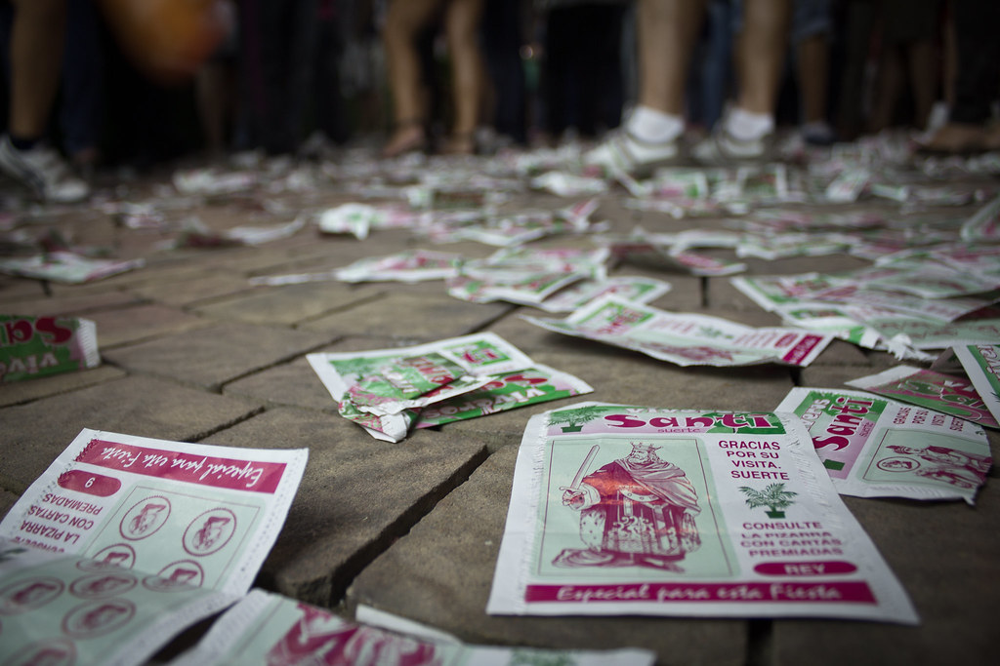

Teorema de la probabilitat total. Regla de la suma.
Sistema complet de successos
Diem que els successos A$_1$, A$_2$, ..., A$_n$ formen un sistema complet de successos de $\Omega$ si:
- Són incompatibles dos a dos: A$_i$$\cap$ A$_j$=$\phi$, per a i,j=1, 2, ..., n, amb i $\leq j$.
- La unió de tots ells és $\Omega$: A$_1$ A$_2$ ··· An =$\Omega$. També diem que els anteriors successos constitueixen una partició de $\Omega$. Es verifica que: P(A$_1$) + P(A$_2$) + ··· + P(A$_n$) = 1

Teorema de la probabilitat total
Si {A$_1$, A$_1$, ..., A$_n$} és un sistema complet de successos, i A un succés qualsevol, aleshores: P(A)=P(A/A$_1$)·P(A$_1$) + P(A/A$_2$)·P(A$_2$)+ ··· +P(A/A$_n$)·P(A$_n$). Abreujadament, amb sumatòries:
P(A) = $\sum_{i=0}^n \ P(A /$A$_i$)·P(A $_i$)
Exemple.En una ciutat hi ha 12 farmàcies, de les quals 2 obrin les 24 hores del dia, 4 obrin 12 hores i les restants obrin 8 hores. Una persona es dirigeix a una farmàcia. Calculem la probabilitat que la trobe oberta. Tenim les farmàcies classificades en tres tipus, i definim els successos:
- A$_1$: “La farmàcia obri les 24 hores del dia” $\to$ P(A$_1$) =$\frac{2}{12}$
- A$_2$: “La farmàcia obri 12 hores al dia” $\to$ P(A$_2$) =$\frac{4}{12}$
- A$_3$: “La farmàcia obri 8 hores al dia” $\to$ P(A$_3$) =$\frac{6}{12}$ Òbviament, A$_1$$\cup$ A$_2$$\cup$ A$_3$ = $\Omega$ i també P(A$_1$) + P(A$_2$) + P(A$_3$) = 1.
DIAGRAMES D'ARBRE: És l'esquema que solem utilitzar per al càlcul de la probabilitat total.
ACTIVITATS DE PROBABILITAT TOTAL
Teorema de Bayes.
PROBABILIDADES “A POSTERIORI” P(Ai/S) =
ACTIVITATS DE PROBABILITAT AMB TEOREMA BAYES